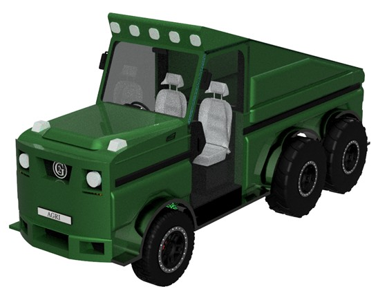

2025
AgriDrive 6×6 - Dual-Use Agricultural Vehicle
Group design of a sustainable dual-use agricultural platform combining the road capability of a pickup with the traction and utility of a tractor, validated through full vehicle-level design and analysis.
Particulars

Placeholder image: final AgriDrive exterior render.
The brief
UK agriculture faces rising costs, tightening sustainability regulations, and low utilisation of single-purpose machinery. Tractors excel on farmland but are slow and inefficient on roads, while pickups lack traction and durability for heavy agricultural work.
AgriDrive was conceived as a dual-use platform to reduce fleet size, improve utilisation, and align with long-term net-zero targets using sustainable fuel strategies.
The concept
AgriDrive 6×6 combines a biofuel powertrain, heavy-duty driveline, and agricultural-grade running gear with road-legal capability. The vehicle is designed to operate efficiently both on farms and on public roads without compromise.
- 6×6 drivetrain for traction and load capability.
- Biofuel-powered (HVO) to reduce lifecycle emissions.
- CTIS for rapid transition between on-road and off-road operation.
- Pickup-like road speed with tractor-level utility.
My role
My role focused on the vehicle dynamics and chassis-mounted subsystems. I worked on suspension selection and justification, steering and braking system design, tyre and CTIS strategy, and overall dynamic behaviour across agricultural and road use cases.
- Suspension architecture selection and load justification.
- Steering and braking system sizing for heavy agricultural duty.
- Tyre selection and CTIS pressure strategy.
- Vehicle dynamics reasoning for mixed terrain use.
Powertrain & Driveline
The vehicle uses a biofuel-compatible heavy-duty diesel engine running on Hydrotreated Vegetable Oil (HVO), achieving up to 89% carbon reduction compared to fossil diesel. Power is delivered through an uprated automatic transmission to a 6×6 driveline.
Image to follow.
Placeholder image: powertrain and driveline schematic.
Chassis, Suspension & Tyres
Chassis design
A ladder-style chassis with integrated webs, skid plates, and engine subframe was selected for durability and ease of manufacture. FEA-based loading cases were applied at suspension mounting points to validate structural behaviour.
Suspension
Solid axle suspension was chosen for robustness and load capacity. Dana 60 axles with SAE-4340 chromoly steel shafts were specified, rated for loads exceeding 2500 kg, with optional electronically selectable differentials.
Tyres & CTIS
A mixed tyre strategy was adopted, with Michelin XM47 tyres at the rear and BFGoodrich All-Terrain tyres at the front. The Central Tyre Inflation System allows rapid deflation for farmland traction and reinflation for on-road efficiency.
Image to follow.
Steering, Braking & Safety
Steering and braking systems were designed for heavy agricultural duty while maintaining road safety and control.
- Electro-hydraulic power steering operating at 80 bar.
- Front 370 mm and rear 350 mm disc brakes.
- ADAS features including BSM, FCW, LDW and TPMS.
- Ergonomic cabin with adjustable controls and digital displays.
Cost and positioning
The estimated build cost was £85,000, with a projected retail price of £105,000. AgriDrive positions itself between tractors, pickups and ATVs, offering higher utilisation and reduced total cost of ownership through multi-role capability.
The concept demonstrates how sustainable fuels and thoughtful vehicle architecture can deliver practical, near-term improvements in agricultural productivity without relying on full electrification.
What I took from it
- Vehicle-level systems thinking across powertrain, chassis and dynamics.
- Balancing sustainability, cost, and real-world usability.
- Working effectively in a large multidisciplinary vehicle team.